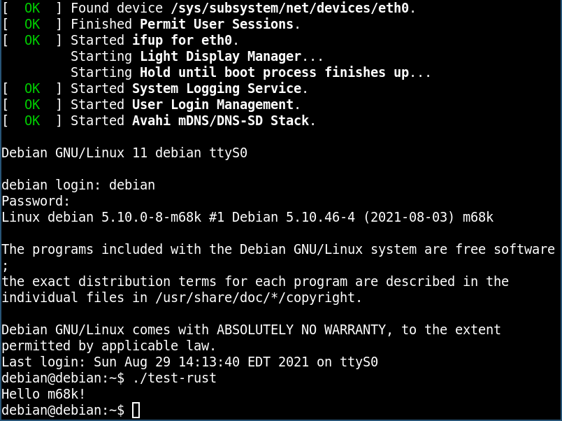

rustc_codegen_gcc: Progress Report #3
What is rustc_codegen_gcc?
rustc_codegen_gcc is a GCC codegen for rustc, meaning that it can be loaded by the existing rustc frontend, but benefits from GCC by having more architectures supported and having access to GCC’s optimizations.
GCC patches status
No progress for the review of my gcc patches this month.
I did create a new one though: it adds the ability to create register variables, which will be necessary for inline assembly in order to specify some registers when the GCC syntax for constraint code is not enough.
Status of merging into rustc
The PR to merge rustc_codegen_gcc into rustc was updated according to the comments in the review. Currently, it’s waiting for reviews to go forward. When it gets merged, we’ll be able to make some useful changes to make it easier to implement the gcc codegen and some required changes to implement some missing features in rustc_codegen_gcc.
State of rustc_codegen_gcc
Here’s what has been done this month:
With those fixed, most UI tests pass as can be seen in the CI:
test result: FAILED. 4332 passed; 104 failed; 48 ignored; 0 measured; 0 filtered out; finished in 1249.33s
(The number of tests is lower than in a previous article, because the tests checking compilation failure were disabled.)
Some people already started to look at the generated code to compare its output to LLVM. One case where the gcc codegen was slower than the LLVM codegen is already fixed!
Next month, I’ll attempt to fix the initialization of global variables which should make even more UI tests pass. (Global variable initialization currently uses a workaround where they are initialized at runtime, but some code breaks because of this.)
Testing of cross-compilation to a new target
Since the primary goal of this project is to be able to run Rust code on platforms not supported by LLVM, and good progress has been made, I tried to cross-compile Rust code for the m68k architecture.
I set up a Debian m68k on qemu and built a libgccjit targeting this architecture.
Aaaaaaaand, good news! I was able to run a "Hello, world!" using the standard library:

To be able to do so, I had to do a few tweaks:
-
I needed to disable 128-bit integers because the support for these integers is not yet done on platforms where gcc doesn’t have them.
-
I needed to choose a rustc target specification close enough to m68k because m68k was not supported in Rust at the time of my tests (I ended up choosing MIPS).
I tried running libcore tests, but they crashed at run-time, seemingly because libc for MIPS does not provide the same values as libc for m68k.
Thanks for your support!
I wanted to personally thank all the people that sponsor this project: your support is very much appreciated.
A special thanks to the following sponsors:
-
igrr
-
saethlin
-
embark-studios
-
TraverseResearch
-
Shnatsel
A big thank you to bjorn3 for his help and reviews.
Also, a big thank you to the rest of my sponsors:
-
repi
-
nevi-me
-
Alovchin91
-
oleid
-
acshi
-
joshtriplett
-
djc
-
TimNN
-
steven-joruk
-
davidlattimore
-
Nehliin
-
colelawrence
-
zmanian
-
alexkirsz
-
regiontog
-
berkus
-
gilescope
-
wezm
-
belzael
-
evanrichter
-
stuhood
-
yerke
-
bes
-
raymanfx
-
seanpianka
-
srijs
-
0xdeafbeef
-
kkysen
-
messense
-
riking
-
rafaelcaricio
-
Lemmih
-
memoryruins
-
pthariensflame
-
senden9
-
Hofer-Julian
-
Jonas Platte
-
spike grobstein
-
Oliver Marshall
-
Sam Harrington
-
Cass
-
Jonas
-
Jeff Muizelaar
-
Robin Moussu
-
Chris Butler
-
Dakota Brink
-
sierrafiveseven
-
Joseph Garvin
-
Paul Ellenbogen
-
icewind
-
Sebastian Zivota
and a few others who preferred to stay anonymous.